601to650
Specifies TCP/IP subnetwork aggregate resources.
Specifies the VTAM PU, LU, or CP name for the service point that manages the resources on the control statements that follow it.
Defines a configuration logical connectivity view, which contains the resources on the control statements that follow it.
Specifies VTAM lines.
Specifies logical links
Specifies APPN len nodes.
Specifies VTAM logical units.
Specifies VTAM logical unit groups.
Specifies VTAM major nodes.
Defines a more detailed logical view, which contains the resources on the control statements that follow it.
Defines a more detailed physical view, which contains the resources on the control statements that follow it.
Specifies Migration Data Hosts.
Specifies NCP resources.
Specifies the MultiSystem Manager or APPNTAM network aggregate resource.
Specifies APPN network nodes.
Specifies Non-SNA (GMFHS managed real) resources.
Specifies a resource from a user-created or MultiSystem Manager open class.
Defines a configuration physical connectivity view, which contains the resources on the control statements that follow it.
Specifies VTAM physical units
Defines a configuration peer view, which contains the resources on the control statements that follow it.
Specifies VTAM SNA shadow resources.
Specifies the global VTAM domain which owns the resources on the control statements that follow it.
Specifies the SNA port.
Specifies the APPN SNA local topology resources
Specifies system aggregate resources.
Specifies APPN transmission groups.
Defines a network view, which contains the resources on the control statements that follow it.
Specifies APPN virtual routing nodes.
Defines wildcard characters to use when coding wild card names on the control statements.
BLDVIEWS control statements have a free-form syntax which uses keywords and values. You can start coding in any column. Leading and trailing blanks are ignored. A specific control statement can span 1 or more lines. Two types of continuation are available:
A control statement separated into multiple statements with the break occurring after a keyword=value. This is done by coding a comma after the keyword=value and continuing with the remaining parameters on the next statements. For example:
A control statement separated into multiple statements with the break occurring anywhere in the coding. (This type of continuation is required when an entire keyword=value cannot be coded on one statement). The break can occur in the middle of a keyword or value by coding the following characters: ||,. For example:
The statements are concatenated and the characters are removed
Note: The RODM Collection Manager interpreter supports the use of double equal signs (==) to distinguish between using MyName-based names or DisplayResourceName-based names as they appear on a view. For example, the following control statement creates a view and adds an object based on its DisplayResourceName:
VIEW=NewView,CREATE=Yes
GENERIC==CommonName,CLASS=My_Object_Class
Control statements can be coded in the following items:
NetView DSIPARM member
Fully qualified cataloged data set
A REXX stem array, which is collected in a MLWTO and passed to BLDVIEWS using the NetView PIPE command
Note: You can use z/OS system symbolics in control statements processed by BLDVIEWS.
Keywords can be specified in any case (upper, lower or mixed) and they can be abbreviated. The abbreviated syntax is denoted in uppercase letters defined on each control statement.
If the control statements are coded in a NetView DSIPARM member or a fully qualified data set, the maximum length of each record is 80 characters. Columns 73-80 are ignored. If the control statements are passed to BLDVIEWS using the NetView PIPE command, there is no limit to the size of the records and no columns are ignored
The following resource names are always translated to upper case:
AGGCHILD (All resources except for NONSNA, AGG, CLUSTER, and MultiSystem Manager TCP/IP resources)
All APPNTAM resources except for nnDomainNetworkCluster
All SNA topology manager resources
IPSPname
SNA
v SNA_DOMAIN
For all other resource names, code them in the same case, because that is how they are displayed by NetView management console or by the various element managers.
Keyword values can be coded in mixed case. In some instances the values are respected and in other instances the values are translated to upper case. The values for the following keywords are not translated to upper case:
CONSOLE
CORRELATER (NetView V1R3 and above)
DISPLAY_NAME
DOMAIN
Generic Commands (ACTIVATE, DEACTIVATE, RECYCLE, DISPLAY)
OTHER_DATA
USER_DATA
Comments can be used, but only on separate statements. Code a comment statement by coding an * in column 1.
* NETA NCPs
NCP=NETA*
When you want to link resources to a view, code a VIEW statement followed by the resource statements that you want linked to the view.
VIEW=NEWVIEW,CREATE=YES
IP_ROUTER=rtr1.company.com
IP_ROUTER=rtr2.company.com
When you want to link resources to an aggregate, code an AGGregate statement followed by the AGGChild resource statements that you want linked to the aggregate.
AGGREGATE=NEWAGG,CREATE=YES
AGGCHILD=rtr1.company.com,type=IP_ROUTER
AGGCHILD=rtr2.company.com,type=IP_ROUTER
The following parameters are common to many of the BLDVIEWS control statements and are documented here and referenced later in the documentation by the control statements that support them:
AGGPRI
AGGTHRESH
COLUMN
CONSOLE
CORRELATER
DISPLAY_NAME
DISPLAY_STATUS
OTHER_DATA
ROW
TYPE
UNLINK
USER_DATA
User Status
Generic Commands:
The AGGPRI keyword is used to set or change the aggregation priority for real resources. The aggregation priority is the number of levels of aggregate resources whose status immediately changes to degraded when the real resource becomes unsatisfactory (regardless of aggregation threshold values). Use this to give higher priority to critical resources.
AGGPRI=x
-2 Use the DisplayResourceType default value
-1 Do not aggregate
0 Aggregate, but immediately degrade 0 levels
1 Immediately degrade 1 level
2 Immediately degrade 2 levels
3 Immediately degrade 3 levels
4 Immediately degrade 4 levels
5 Immediately degrade 5 levels
6 Immediately degrade 6 levels
7 Immediately degrade 7 levels
8 Immediately degrade 8 levels
9 Immediately degrade 9 levels
AGGPRI=2
The AGGTHRESH keyword is used to set the aggregation thresholds for aggregate resources. The aggregation thresholds are used to determine when the status of aggregates are changed to reflect the status of the underlying resources. There are three aggregation thresholds:
ThresholdDegraded (status color is yellow)
ThresholdSeverelyDegraded (status color is pink)
ThresholdUnsatisfactory (status color is red)
Thresholds are specified on aggregate resources and are the minimum number of unsatisfactory, real resources underneath the aggregate which cause the aggregate to change status.
If you specify percentages, BLDVIEWS queries the TotalRealResourceCount field of the aggregate and multiplies it by the specified percentages to calculate the new values for the thresholds.
AGGTHRESH=(xxx,yyy,zzz)
xxx 1-3 digit ThresholdDegraded
yyy 1-3 digit ThresholdSeverelyDegraded
zzz 1-3 digit ThresholdUnsatisfactory
AGGTHRESH=(10#,25%,75%)
To specify a threshold value as a percentage, prefix or suffix the number with a %. BLDVIEWS multiplies it by the total number of real resources linked to the aggregate to come up with the threshold.
To specify a threshold value as an actual number, prefix or suffix the number with a #. If the specified threshold is larger than the total number of real resources beneath the aggregate, then the threshold is set to the total number of real resources beneath the aggregate
You can mix actual values and percentages in the AGGTHRESH keyword.
v If resources are added or deleted from an aggregate object after BLDVIEWS is run, it is necessary to rerun BLDVIEWS to readjust the thresholds.
When building a grid view (layout type of 9), you can specify the specific column on the screen where you want a resource to be placed. The COLUMN keyword is used to specify the column.
COLUMN=column_on_screen
COLUMN=3
The COLUMN keyword is only supported if specified on a resource control statement that follows a view control statement with a layout type of 9 (grid).
ROW must be specified if COLUMN is specified
With remote console support, you can click on a resource and then issue a command, such as TELNET, or remotely log on to a resource. Although this is referred to as remote console support, any command can be specified. The command runs on the NetView management console workstation. BLDVIEWS envelopes the specified command with RemoteConsole = # and # and then sets the DisplayResourceUserData field. The user only has to specify the command.
You can set the remote console field for any resource in RODM that has the DisplayResourceUserData field defined. See the IBM Tivoli NetView for z/OS User's Guide: NetView Management Console for more information.
CONSOLE=’command’
CONSOLE=’TELNET.EXE %name%’
You can set Remote Console support for any object which has the DisplayResourceUserData field defined.
BLDVIEWS envelopes the specified command with the appropriate control information that is required for the command to be run correctly.The command must be specified either with a fully qualified name (drive and path) or the PATH must be set so the command can be located.
CONSOLE is mutually exclusive with USER_DATA
BLDVIEWS provides control variables that can be coded anywhere in the command text. The variables are:
Is substituted with the name of the resource. This variable is supported for all resources.
Is substituted with a 1-5 digit random number. This variable is supported for all resources.
Is substituted with the segment number where the resource resides.
This variable is supported only for the resources that are identified by the following control statements:
– IP_HOST
– INTERFACE
Is substituted with the internet address of the resource. v BLDVIEWS enables the following NetView variables to be coded anywhere in the command text:
>VTAM network identifier
Current® NetView domain
NetView operator or task ID
Current operating system name
Level of operating system
VTAM version and release
Level of operating system
NetView version and release
z/OS version and release
Type of operating system
Name of the MVS sysplex Single quotation marks (') or double quotation marks (") can be used as a delimiter. Correlater:
The CORRELATER keyword is used to set the Correlater field for an object. BLDVIEWS enables the following NetView variables to be coded anywhere in the correlater text:
VTAM network identifier
Current NetView domain
NetView operator or task ID
Current operating system name
Level of operating system
VTAM version and release
NetView version and release
MVS version and release
Type of operating system
Name of the MVS sysplex
CORRELATER=’text’
Set the DisplayResourceName field for resources coded on SNA, NONSNA and AGGREGATE statements. The DisplayResourceName field is used to define a more descriptive and useful name to the resources. DisplayResourceName, if defined for a resource, is displayed on the workstation instead of the actual RODM name (MyName) of the resource. Use the BLDVIEWS substitution variable %NAME% as part of the new DisplayResourceName value. The %NAME% variable is substituted with the name of the resource. You can use this to reformat the names of multiple resources at once with one control statement. You can prefix or suffix the names with additional text.
DISPLAY_NAME=xxx
DISPLAY_NAME=NCP_1
The DISPLAY_STATUS keyword is used to set the status of an object.
DISPLAY_STATUS=xxx
129 Satisfactory
144 Medium satisfactory
145 Low satisfactory
130 Unsatisfactory
160 Medium unsatisfactory
161 Low unsatisfactory
131 Intermediate
132 Unknown
133 Degraded
134 Severely degraded
136–143
User status
152–159
User status
DISPLAY_STATUS=130
Display status value 131 is not supported for aggregate objects.
Display status values 133 and 134 are not supported for real objects.
The OTHER_DATA keyword is used to set the RODM DisplayResourceOtherData field for an object. The DisplayResourceOtherData field can be set to any value. The value in this field is displayed in the NetView management console Data1 field.
OTHER_DATA=’other_data’
OTHER_DATA=’Call 1-800-IBM-HELP for support’
BLDVIEWS enables the following NetView variables to be coded anywhere in the other data text. The variables are:
VTAM network identifier
Current NetView domain
NetView operator or task ID
Current operating system name
VTAM version and release
NetView version and release
MVS version and release
Ttype of operating system
Name of the MVS sysplex
Single quotation marks (') or double quotation marks (") can be used as a delimiter.
When building a hierarchical view (layout type of 6) or a grid view (layout type of 9), you can specify the specific row on the screen where you want a resource to be placed. Use the ROW keyword to specify the row on a screen where you want a resource to be positioned.
The ROW keyword is only supported if specified on a resource control statement that follows a view control statement with a layout type of 6 (hierarchical) or 9 (grid).
ROW=row_on_screen
ROW=2
Use the UNLINK keyword to remove a resource from a view or from an aggregate object without having to delete the view or aggregate and rebuild them.
Syntax: UNLINK
View=myview
Agg=myagg,unlink
The USER_DATA keyword is used to set the DisplayResourceUserData field for an object. The contents of this field is displayed in the NetView management console Data2 field. You can set the User Data field for any resource which has the DisplayResourceUserData field defined, and you can set the DisplayResourceUserData field to any value.
BLDVIEWS enables the following NetView variables to be coded anywhere in the user data text. The variables are:
VTAM network identifier
Current NetView domain
NetView operator ID or task ID
Current operating system name
VTAM version and release
NetView version and release
MVS version and release
Type of operating system
Name of the MVS sysplex
Syntax: USER_DATA=’user_data’
USER_DATA=Call x45108 for support
Single quotation marks (') or double quotation marks (") can be used as a delimiter.
This function cannot be used if Remote Console support is used, because they occupy the DisplayResourceUserData field in RODM.
Use the following user status keywords to set the corresponding bits in the UserStatus field:
Mark
Automation in progress
Suspend
The MARK keyword is used to set or clear the mark bit in the UserStatus field for any resource which has the UserStatus field defined. The resource must already exist in RODM. If you want to create an object, you must first code the control statements to create the resource and then code the control statements to update the resource.
The AUTO_IN_PROGRESS keyword is used to set or clear the Automation in Progress bit in the UserStatus field for any resource in RODM that has the UserStatus field defined. The resource must already exist in RODM. If you want to create an object, you must first code the control statements to create the resource and then code the control statements to update the resource.
The SUSPEND and SUSPEND_WITH_AUTO_CLEAR keywords can be used to set the Suspend bit in the UserStatus field for any resource in RODM that has the UserStatus field defined. The resource must already exist in RODM. If you want to create an object, you must first code the control statements to create the resource and then code the control statements to update the resource.
Setting the suspend User status flag disables the resource from aggregation and participation in exception views. If you set the Suspend bit in the UserStatus field with the SUSPEND_WITH_AUTO_CLEAR keyword, GMFHS automatically clears the Suspend bit when the resource returns to a satisfactory state. If you set the Suspend bit in the UserStatus field with the SUSPEND keyword, you must manually clear the Suspend bit from NetView management console or use BLDVIEWS.
The state of the UserStatus bits can be displayed in the Resource Information pop-up window.
BLDVIEWS can be used to set generic commands for objects. With the NetView management console generic commands function, a NetView management console operator can select a resource and issue one of the following generic commands:
Current Status (DisplayStatusCommandText)
Activate (ActivateCommandText)
Inactivate (DeactivateCommandText)
v Recycle (RecycleCommandText)
The actual command to be issued is retrieved from fields on the object. For example, the command text for the Activate command is retrieved from the ActivateCommandText field.
ACTivate=’activate_command’
DEACTivate’=deactivate_command’
RECYcle=’recycle_command’
DISPlay=’display_command’
ACTIVATE=’BRG LINK NAME=%NAME%’
DISPLAY=BRG QUERY NAME=%NAME%
For MultiSystem Manager token ring resources, BLDVIEWS appends the commands with an operator ID of FLCVBLDV and a unique correlator value.
BLDVIEWS provides the following control variables that can be coded anywhere in the command text:
Substituted with the name of the resource. This variable is supported for all resources.
Substituted with a 1-5 digit random number. This variable is supported for all resources.
Substituted with the segment number where the resource resides. This variable is supported only for the resources that are identified by the following control statements:
– IP_HOST
– INTERFACE
Substituted with the internet address of the resource. This variable is only supported for the NWSERVER control statement.
BLDVIEWS enables the following NetView variables to be coded anywhere in the command text:
VTAM network identifier
Current NetView domain
NetView operator or task ID
Current operating system name
VTAM version and release
NetView version and release
MVS version and release
Type of operating system
Name of the MVS sysplex
v Single quotation marks (') or double quotation marks (") can be used as a delimiter.
Use the WILDCARD control statement to define wildcard characters.
The WILDCARD control statement defines wildcard characters to use when coding a wild card pattern matching name on a RESOURCE control statement.
wildcard_single_character and wildcard_string are special characters used to define a wild card pattern matching name.
THe default value of wildcard_single_character and wildcard_string is an *
wildcard single_character and wildcard_string Special characters used to define a wild card pattern matching name.
Any character can be specified, except for a comma ',' or an equal sign '='. The default character for both wildcard_single_character and wildcard_string an asterisk (*).
Used when you want to perform a wild card match on 1 character. The wildcard_single_character coded in a position in the wild card pattern matching name always matches the character in the corresponding position in the resource name.
If wildcard_string is specified in a wild card pattern matching name in any position but the last position of the wild card pattern matching name, it is treated as a wildcard_single_character (perform a wild card match on 1 character in the position specified).
Used when you wish to perform a wild card match on a remaining string of characters at the end of a resource name. The wildcard_string coded at the end of a wild card pattern matching name always matches the string of characters at the corresponding position in the resource name.
If wildcard_string is specified in a wild card pattern matching name in any position except the last position of the wild card pattern matching name, it is treated as a wildcard_single_character (perform a wild card match on 1 character in the position specified).
Assume WILDCARD=(?,*) for the following pattern matching examples:
Matches Found
Matches all bridge resources whose names begin with A001B.
Matches all bridge resources whose names are eight characters in length and end with B001).
Matches all segment resources whose names have a C in position 2 and a 0 in position 4).
Matches all adapter resources whose names are 6 or more characters in length, and have SERV in positions 3 through 6).
Matches all adapter resources whose names are 10 or 11 characters in length, and have PRINTER0 in positions 3 through 10).
Assume WILDCARD = *,* (the default), for the following pattern matching
examples:
Matches Found
Matches all bridge resources whose names begin with A001B.
Matches all bridge resources whose names are eight characters in length and end with B001.
Matches all segment resources whose names have a C in position 2 and a 0 in position 4.
Matches all adapter resources whose names are 6 or more characters in length, and have SERV in positions 3 through 6.
Matches all adapter resources whose names are 10 or more characters in length, and have PRINTER0 in positions 3 through 10.
You can use the following selective control statements to be more selective in specifying resources to be processed by BLDVIEWS, or to specify common information to be used to locate certain resources in RODM. Wildcard is not valid for these types of control statements.
The service point control statement specifies the service point that manages the resources on the control statements following the service point control statement. With the service point control statement, you can be more selective in specifying resources to be processed by BLDVIEWS. This service point name can be overridden on individual control statements using the SPname keyword.
The following service point control statements are enabled:
LANSPname
IPSPname
Syntax
Parameters
service_point
The 1-8 character VTAM PU, LU, CP name, or the IP host name.
Include resources from ALL service points. All is the default
If you code control statements with a name of ALL or a resource name, the resources that get processed depend on whether a service point control statement was previously specified.
If no prior service point statement was specified and a resource control statement was coded with ALL for a resource name, all resources are processed.
If no prior service point statement was specified and a resource control statement was coded with a wild card resource name, all resources that match the wild card name are processed.
If a prior service point statement was specified and a resource control statement was coded with ALL for a resource name, all resources managed by that service point are processed.
If a prior service point statement was specified and a resource control statement was coded with a wild card resource name, all resources that match the wild card name, and are managed by that service point, are processed.
The SNA_DOMAIN control statement specifies the SNA domain that owns the SNA topology manager resources on the control statements following the SNA_DOMAIN control statement. The SNA domain is used to locate the SNA topology manager resources in RODM. The default is ALL. This value can be overridden on individual control statements using the SNA_DOMAIN keyword.
Syntax
Parameters
sna_domain_name
The 1–17 character SNA domain name in the format of network.host_pu_name.
VTAM network name 1–8 characters (NETID parameter in VTAM start list ATCSTRxx)
VTAM host PU name 1–8 characters (HOSTPU parameter in VTAM start list ATCSTRxx)
If sna_domain_name is not specified, then the local SNA domain is used (domain where BLDVIEWS is run).
The following SNA Topology Resources require an SNA Domain:
VTAM Major Node (MAJNODE control statement)
CDRMs (CDRM control statement)
CDRSCs (CDRSC control statement)
Logical Units (LU control statement)
Logical Unit Groups (LU_GROUP control statement)
The SNA Domain Name can also be specified on those control statements using the SNA_DOMAIN keyword in which case it overrides the SNA_DOMAIN control statement.
The following view control statements define the types of views to be created.
Description
The VIEW control statement defines a network view which contains the resources on the control statements that follow it.
Syntax

Parameters
view_name
The 1–32 character name of the view. It is the MyName of the network view object.
annotation
The 1–32 character view annotation.
layout
The 1 digit layout type specification which determines the layout algorithm to use when building the view. BLDVIEWS supports layout types; however, only the following values are used:
6 - hierarchical (default for CREATE=YES)
7 - ellipse
9 - grid
layout_width
An integer which specifies how many resource objects appear horizontally on one line in the view. The default value is 0, which results in a grid closely resembling a square. This is only applicable for layout type 9.
CREATE
Specifies which action to perform on the resource specified.
YES
Create a new object for this view. The old object is deleted, if it exists.
YES is the default
NO
Do not create a new object for this view. Update the existing object. If the object does not exist, an error occurs.
BUILD
Create a new object for this view if it does not exist. If it does exist, update the object.
EVIEW Control Statement:
Description
Syntax
EVIEW
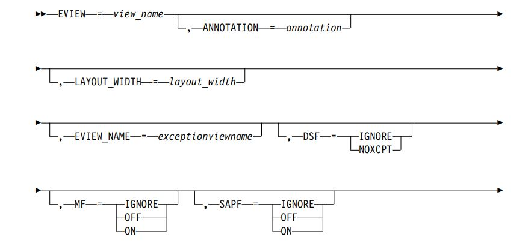Parameters
view_name
∇ The 1–32 character name of the view. It is the MyName of the Exception View object.
annotation
The 1–32 character view annotation
layout_width
An integer which specifies how many resource objects appear horizontally on one line in the view. The default value is 0 which results in a grid closely resembling a square. This is only applicable for layout type 9.
exceptionviewname
The 1–8 character name associated with the exception view. Resource objects that have this name in their ExceptionViewList field are considered candidates for display in the associated exception view. This field must be unique for all exception views. If not specified, BLDVIEWS creates a unique exceptionviewname.
DSF
Specifies the DisplayStatus filter options for the exception view
IGNORE
No filtering is done and the DisplayStatus is ignored. Objects with a mapped display status of XCPT or NOXCPT are candidates for this view.
NOXCPT
Filter out all objects that do not map to an exception status.
MF
Specifies the UserStatus Mark filter options for the exception view.
IGNORE
No filtering. UserStatus Mark is ignored.
ON
Filters out objects that have the UserStatus bit for Mark ON. If an object has this UserStatus bit on, it is not in the view.
OFF
Filters out objects that have the UserStatus bit for Mark OFF. If an object has this UserStatus bit off, it is not in the view.
SAPF
Specifies the UserStatus SNA Alert Pending filter options for the exception view
IGNORE
No filtering. UserStatus SNA Alert Pending is ignored.
ON
Filters out objects that have the UserStatus bit for SNA Alert Pending ON. If an object has this UserStatus bit on, it is not in the view.
OFF
Filters out objects that have the UserStatus bit for SNA Alert Pending OFF.If an object has this UserStatus bit off, it is not in the view.
TIF
Specifies the UserStatus Threshold Inconsistency filter options for the Exception View.
IGNORE
No filtering. UserStatus Threshold Inconsistency is ignored.
ON
Filters out objects that have the UserStatus bit for Threshold Inconsistency ON. If an object has this UserStatus bit on, it is not in the view
OFF
Filters out objects that have the UserStatus bit Threshold Inconsistency OFF. If an object has this UserStatus bit off, it is not in the view.
AIPF
Specifies the UserStatus Automation In Progress filter options for the Exception View.
IGNORE
No filtering. UserStatus Automation In Progress is ignored.
ON
Filters out objects that have the UserStatus bit for Automation In Progress ON. If an object has this UserStatus bit on, it is not in the view
OFF
Filters out objects that have the UserStatus bit Automation In Progress OFF. If an object has this UserStatus bit off, it is not in the view.
CREATE
Specifies which action to perform on the resource specified.
YES
Create a new object for this view. The old object is deleted, if it exists. YES is the default
NO
Do not create a new object for this view. Uupdate the existing object. If the object does not exist, an error occurs.
BUILD
Create a new object for this view if it does not exist. If it does exist, update the object.
Description
The PVIEW control statement defines a configuration peer view, which contains the resources on the control statements that follow it.
Syntax
PVIEW

Parameters
view_name
The 1–32 character name of the view. It is the MyName of the configuration peer view object.
layout
The 1 digit layout type specification which determines the layout algorithm to use when building the view. BLDVIEWS supports all layout types; however, only the following values are used:
v 6 - hierarchical (default for CREATE=YES)
7 - ellipse
v 9 - grid
layout_width
An integer which specifies how many resource objects appear horizontally on one line in the view. The default value is 0 which results in a grid closely resembling a square. This is only applicable for layout type 9.
CREATE
Specifies which action to perform on the resource specified.
YES
Create a new object for this view. The old object is deleted, if it exists.
YES is the default
NO
Do not create a new object for this view. Update the existing object. If the object does not exist, an error occurs.
BUILD
Create a new object for this view if it does not exist. If it does exist, update the object.
Description
The BBVIEW control statement defines a configuration backbone view, which contains the resources on the control statements that follow it.
Syntax
BBVIEW
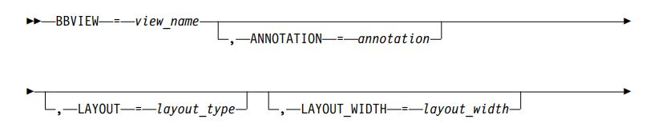Parameters
view_name
The 1–32 character name of the view. It is the MyName of the configuration backbone view object.
annotation
The 1–32 character view annotation.
layout
The 1 digit layout type specification which determines the layout algorithm to use when building the view. BLDVIEWS supports all layout types; however, only the following values are used:
1 - Radial Layout by link type (default for CREATE=YES)
6 - hierarchical
7 - ellipse
9 - grid
layout_width
An integer which specifies how many resources appear horizontally on one line in the view. The default value is 0, which results in a grid closely resembling a square. This is only applicable for layout type 9.
CREATE
Specifies which action to perform on the resource specified.
YES
Create a new object for this view. The old object is deleted, if it exists.
YES is the default.
NO
Do not create a new object for this view. Update the existing object. If the object does not exist, an error occurs.
BUILD
Create a new object for this view if it does not exist. If it does exist, update the object.
Description
The LCVIEW control statement defines a Configuration Logical Connectvity Viewwhich contains the resources on the control statements that follow it.
Syntax
LCVIEW
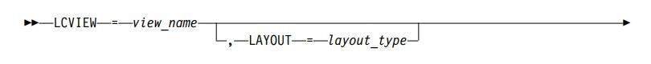Parameters
view_name
The 1–32 character name of the view. It is the MyName of the configuration logical connectivity view object.
layout
The 1 digit layout type specification which determines the layout algorithm to use when building the view. BLDVIEWS supports all layout types; however, only the following values are used:
1 - Radial Layout by link type (default for CREATE=YES)
6 - hierarchical
7 - ellipse
9 - grid
layout_width
An integer which specifies how many resources appear horizontally on one line in the view. The value is 0, which results in a grid closely resembling a square. This is only applicable for layout type 9.
CREATE
Specifies which action to perform on the resource specified.
YES
Create a new object for this view. The old object is deleted, if it exists.
YES is the default.
NO
Do not create a new object for this view. Update the existing object. If the object does not exist, an error occurs.
BUILD
Create a new object for this view if it does not exist. If it does exist, update the object.
Description
The PCVIEW control statement defines a configuration physical connectivity view, which contains the resources on the control statements that follow it.
Syntax
PCVIEW
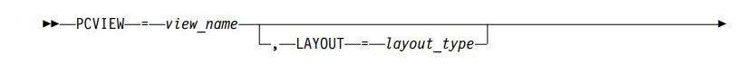Parameters
view_name
The 1–32 character name of the view. It is the MyName of the configuration physical connectivity view object.
layout
The 1 digit layout type specification which determines the layout algorithm to use when building the view. BLDVIEWS supports all layout types; however, only the following values are used:
1 - Radial Layout by link type (default for CREATE=YES)
6 - hierarchical
7 - ellipse
9 -grid
layout_width
An integer which specifies how many resources appear horizontally on one line in the view. The value is 0, which results in a grid closely resembling a square. This is only applicable for layout type 9.
CREATE
Specifies which action to perform on the resource specified.
YES
Create a new object for this view. The old object is deleted, if it exists.
YES is the default.
NO
Do not create a new object for this view. Update the existing object. If the object does not exist, an error occurs.
BUILD
Create a new object for this view if it does not exist. If it does exist, update the object.
Description
The MDLVIEW control statement defines a more detail logical view, which contains the resources on the control statements that follow it.
Syntax
MDLVIEW
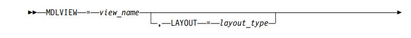Parameters
view_name
The 1–32 character name of the view. It is the MyName of the more detail logical view object.
layout
The 1 digit layout type specification which determines the layout algorithm to use when building the view. BLDVIEWS supports all layout types; however, only the following values are used:
1 - Radial Layout by link type (default for CREATE=YES)
6 - hierarchical
7 - ellipse
9 - grid
layout_width
An integer which specifies how many resources appear horizontally on one line in the view. The value is 0, which results in a grid closely resembling a square. This is only applicable for layout type 9.
CREATE
Specifies which action to perform on the resource specified.
YES
Create a new object for this view. The old object is deleted, if it exists.
YES is the default.
NO
Do not create a new object for this view. Update the existing object. If the object does not exist, an error occurs.
BUILD
Create a new object for this view if it does not exist. If it does exist, update the object.
Description
The MDPVIEW control statement defines a more detail physical view, which contains the resources on the control statements that follow it.
Syntax
MDPVIEW

Parameters
view_name
The 1–32 character name of the view. It is the MyName of the more detail physical view object.
layout
The 1 digit layout type specification which determines the layout algorithm to use when building the view. BLDVIEWS supports all layout types; however, only the following values are used:
1 - Radial Layout by link type (default for CREATE=YES)
6 - hierarchical
7 - ellipse
9 - grid
layout_width
An integer which specifies how many resources appear horizontally on one line in the view. The value is 0, which results in a grid closely resembling a square. This is only applicable for layout type 9.
CREATE
Specifies which action to perform on the resource specified
YES
Create a new object for this view. The old object is deleted, if it exists.
YES is the default
NO
Do not create a new object for this view. Update the existing object. If the object does not exist, an error occurs.
BUILD
Create a new object for this view if it does not exist. If it does exist, update the object.
The following resource control statements specify the resources to be processed by BLDVIEWS.
Description
The CDRM control statement specifies the VTAM CDRM resource to be processed.
Syntax
CDRM
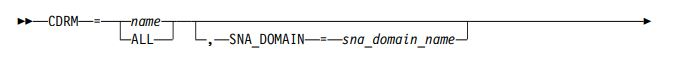Parameters
name
The 1–17 character VTAM CDRM name in the format of: snaNetID.snaNodeName. ALL or a wild card name can be specified.
sna_domain_name
specifies the VTAM SNA domain that owns the CDRM resource. This overrides the value specified on the SNA_DOMAIN control statement. The format of the name is network.domain.
See “Common Control Statement Parameters” on page 604 for a description of the other supported keywords.
Description
The CDRSC control statement specifies the VTAM CDRSC resource to be processed.
Syntax
CDRSC
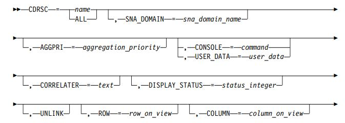Parameters
name
The 1–17 character VTAM CDRSC name in the format of snaNetID.snaNodeName. The network portion of the CDRSC name might be omitted for those CDRSCS which were not defined with a NETID parameter. ALL or a wild card name can be specified.
sna_domain_name
Specifies the VTAM SNA domain that owns the CDRM resource. This overrides the value specified on the SNA_DOMAIN control statement. The format of the name is network.domain.
See “Common Control Statement Parameters” on page 604 for a description of the other supported keywords.
Description
The CIRCUIT control statement specifies the Circuit resource to be processed. This includes APPN Transmission Group circuits connected to Type 2.1 nodes, APPN Transmission Group circuits connected to Composite Nodes, APPN Transmission Group circuits connected to NTRI-like nodes, APPN Transmission Group interdomain circuits, APPN Transmission Group intersubnetwork circuits, and Subarea Transmission Group Circuits.
Syntax
CIRCUIT
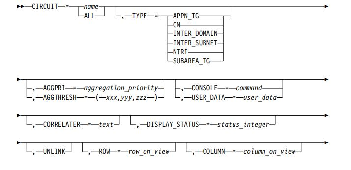Parameters
name
The SNA Circuit name in the format of snaNetID.circuitID. The name is in the same format that is displayed in NetView management console for the resource (DisplayResourceName). ALL or a wild card name can be specified.
TYPE
Specifies the type of circuit.
APPN_TG
circuit connected to Type 2.1 nodes
CN
circuit connected to Composite Nodes
NTRI
circuit connected to NTRI-like Nodes
INTER_SUBNET
intersubnetwork circuits
INTER_DOMAIN
interdomain circuits
SUBAREA_TG
subarea transmission group circuits
See “Common Control Statement Parameters” on page 604 for a description of the other supported keywords.
Description
The CLUSTER control statement specifies the MultiSystem Manager or APPN Cluster aggregate resource to be processed. This aggregate can contain 1 or more network aggregates.
Syntax
CLUSTER
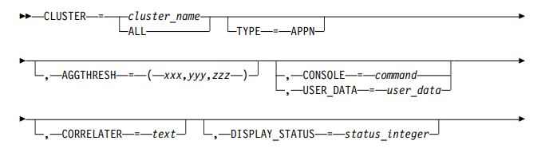Parameters
cluster_name
The name of the CLUSTER aggregate resource.
For TYPE=APPN, the name is in the format of snaNetid.systemId which is the network identifier of the NetView domain where the topology manager is located.
ALL or a wild card name can be specified
TYPE
Specifies the type of CLUSTER aggregate resource. The following value is valid:
APPN APPN
See “Common Control Statement Parameters” on page 604 for a description of the other supported keywords.
Description
The DOMAIN control statement specifies the APPN Domain resource to be processed.
Syntax
DOMAIN
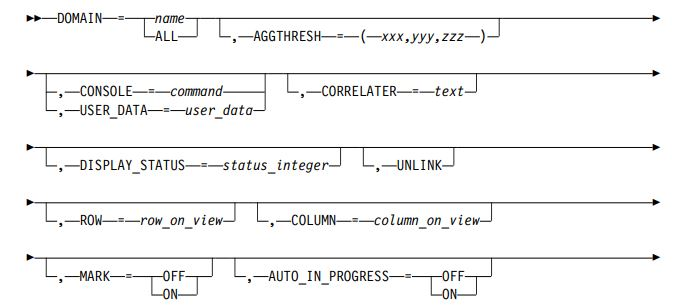Parameters
name
The 1–17 character APPN network node domain name in the format: snaNetID.snaNodeName. ALL or a wild card name can be specified.
See “Common Control Statement Parameters” on page 604 for a description of the other supported keywords.
Description
The ENODE control statement specifies the APPN End Node resource to be processed.
Syntax
ENODE
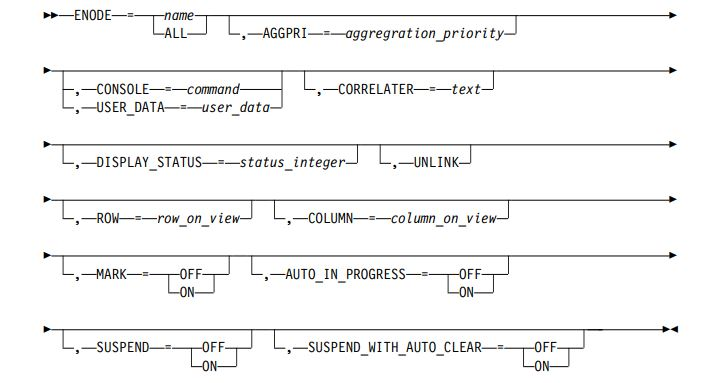Parameters
name
The 1–17 character SNA end node resource name in the format: snaNetID.snaNodeName. ALL or a wild card name can be specified.
See “Common Control Statement Parameters” on page 604 for a description of the other supported keywords.
Description
The GENERIC control statement specifies a Real or Aggregate resource from a user-defined class to be processed.
Note: The BLDVIEWS interpreter (FLCVBLDV) and the RODM Collection Manager interpreter (FLCV2RCM) treat the name parameter slightly differently. See the following description of the name parameter.
Syntax
GENERIC
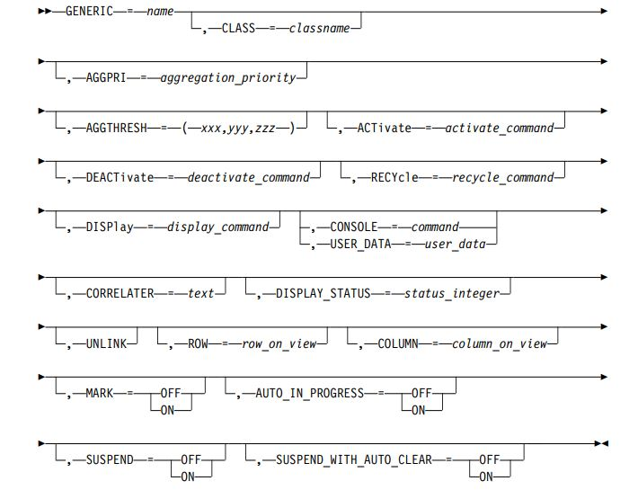Parameters
name
The BLDVIEWS interpreter (FLCVBLDV) searches both the RODM MyName and the DisplayResourceName attributes for matching object names. The RODM Collection Manager interpreter (FLCV2RCM) searches only the RODMDisplayResourceName attribute for matching names.
classname
The name of the RODM class containing the object.
See “Common Control Statement Parameters” on page 604 for a description of the other supported keywords.
Description
The GW_NCP control statement specifies the SNA Communication Controller node resource functioning as gateways to be processed.
Syntax
GW_NCP
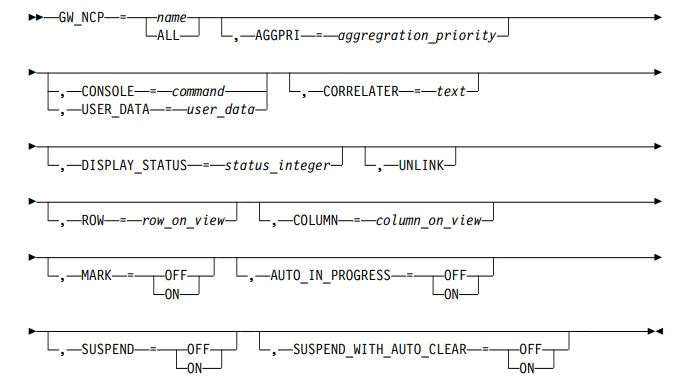Parameters
name
The 1–17 character SNA Communication Controller node in the format of: snaNetID.snaNodeName. ALL or a wild card name can be specified.
See “Common Control Statement Parameters” on page 604 for a description of the other supported keywords.
Description
The HOST_NODE control statement specifies the SNA Type 5 Node resource to be processed. A Type 5 node is a subarea node containing an SSCP and having hierarchical control of Type 4 nodes and peripheral nodes.
Syntax
HOST_NODE
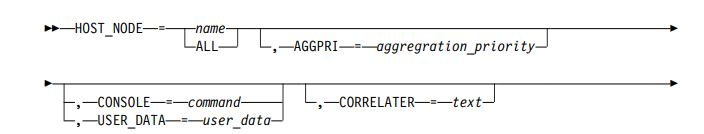Parameters
name
The 1–17 character SNA Host Node name in the format of: snaNetID.snaNodeName. ALL or a wild card name can be specified.
See “Common Control Statement Parameters” on page 604 for a description of the other supported keywords.
Description
The IC_NODE control statement specifies the SNA Interchange Node resources to be processed.
Syntax
IC_NODE
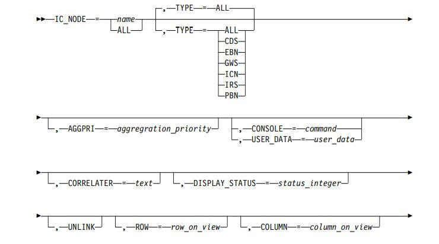Parameters
name
The 1–17 character SNA Interchange Node name in the format of: snaNetID.snaNodeName. ALL or a wild card name can be specified.
TYPE
specifies the type of network node resource. The values are :
GWS Nodes with gateway services
CDS Nodes with central directory services
IRS Nodes with intermediate routing services
PBN Nodes which are peripheral border nodes
EBN Nodes which are extended border nodes
ALL all IC_NODE types (default)
TYPE
Is ignored when you specify an exact resource name. It is supported only for a name of ALL or a wild card name.
See “Common Control Statement Parameters” on page 604 for a description of the other supported keywords.
Description
The INTERFACE control statement specifies the MultiSystem Manager TCP/IP adapter resource to be processed.
Syntax
INTERFACE
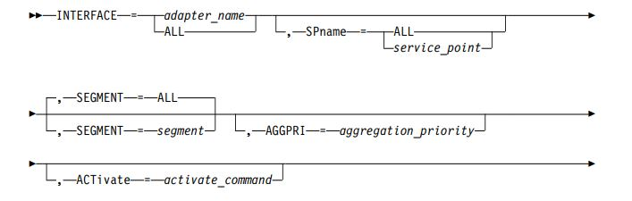Parameters
adapter_name
The TCP/IP interface adapter name.
ALL or a wild card name can be specified.
segment_name
The segment name.
ALL can be specified and is the default.
See “Common Control Statement Parameters” on page 604 for a description of the other supported keywords
Description
The IP_BRIDGE control statement specifies the MultiSystem Manager TCP/IP bridge aggregate resource to be processed.
Syntax
IP_BRIDGE
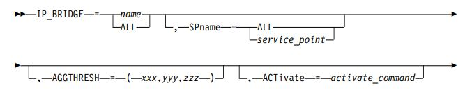Parameters
name
The TCP/IP bridge name. ALL or a wild card name can be specified.
See “Common Control Statement Parameters” on page 604 for a description of the other supported keywords.
Description
The IP_HOST control statement specifies the MultiSystem Manager TCP/IP host aggregate resource to be processed.
Syntax
IP_HOST
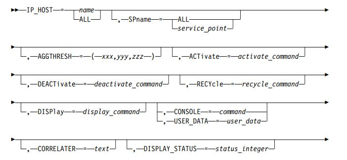Parameters
name
The TCP/IP host name. ALL or a wild card name can be specified.
See “Common Control Statement Parameters” on page 604 for a description of the other supported keywords.
Description
The IP_HUB control statement specifies the MultiSystem Manager TCP/IP hub aggregate resource to be processed.
Syntax
IP_HUB
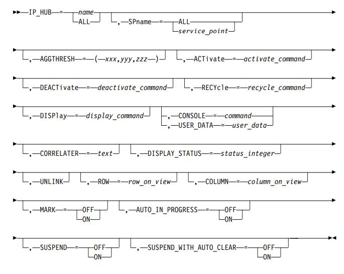Parameters
name
The TCP/IP hub name. ALL or a wild card name can be specified.
See “Common Control Statement Parameters” on page 604 for a description of the other supported keywords.
Description
The IP_LINK control statement specifies the MultiSystem Manager TCP/IP interface link aggregate resource to be processed.
Syntax
IP_LINK

Parameters
name
The TCP/IP Link name. ALL or a wild card name can be specified.
See “Common Control Statement Parameters” on page 604 for a description of the other supported keywords.
Description
The IP_LOCATION control statement specifies the MultiSystem Manager TCP/IP location resource to be processed.
Syntax
IP_LOCATION
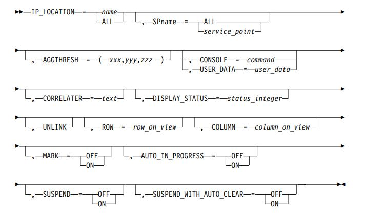Parameters
name
The TCP/IP location name. ALL or a wild card name can be specified.
See “Common Control Statement Parameters” on page 604 for a description of the other supported keywords.
Description
The IP_ROUTER control statement specifies the MultiSystem Manager TCP/IP router aggregate resource to be processed.
Syntax
IP_ROUTER
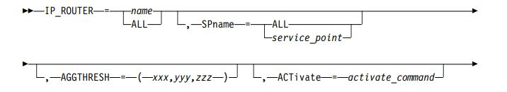Parameters
name
The TCP/IP router name. ALL or a wild card name can be specified.
See “Common Control Statement Parameters” on page 604 for a description of the other supported keywords.
Description
The IP_SEGMENT control statement specifies the MultiSystem Manager TCP/IP Segment aggregate resource to be processed.
Syntax
IP_SEGMENT
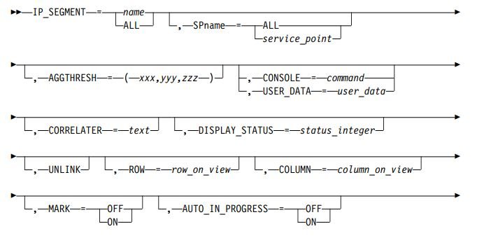Parameters
name
The TCP/IP segment name. ALL or a wild card name can be specified.
See “Common Control Statement Parameters” on page 604 for a description of the other supported keywords.
Description
The IP_SUBNET control statement specifies the MultiSystem Manager TCP/IP Subnetwork aggregate resource to be processed.
Syntax
IP_SUBNET
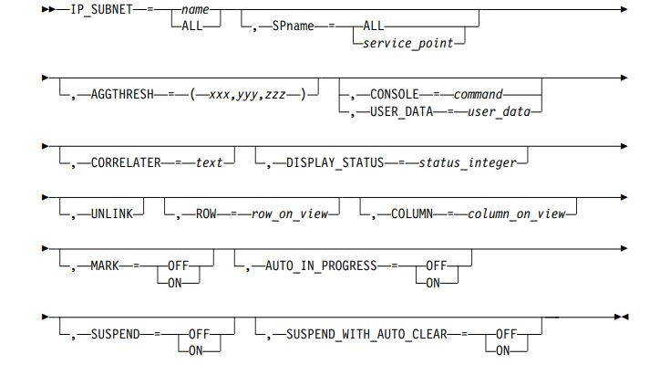Parameters
name
The TCP/IP Subnetwork name. ALL or a wild card name can be specified.
See “Common Control Statement Parameters” on page 604 for a description of the other supported keywords.
Description
The LINE control statement specifies the SNA Line resource to be processed.
Syntax
LINE
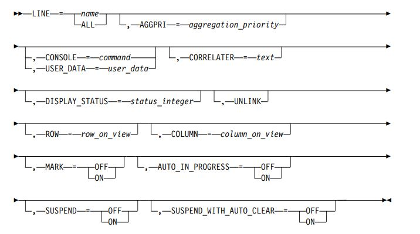Parameters
name
The 1–17 character SNA line name in the format of: snaNetID.snaNodeName. ALL or a wild card name can be specified.
See “Common Control Statement Parameters” on page 604 for a description of the other supported keywords.
>Description
The LLINK control statement specifies the Logical Link resource to be processed.
Syntax
LLINK
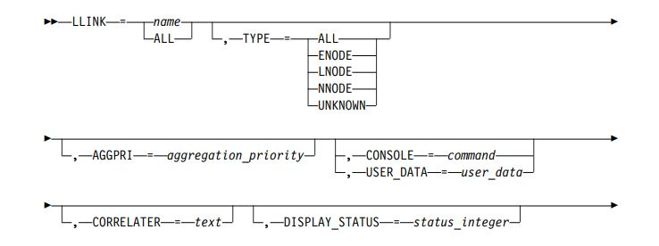Parameters
name
The SNA Logical Link resource name in the format: network.resource.link. ALL or a wild card name can be specified.
TYPE
PE Specifies the type of Logical LInk. TYPE is ignored when you specify an exact resource name. It is supported only for a name of ALL or a wild card name. The values are :
NNODE
Network Node
ENODE
End Node
LNODE
Len Node
UNKNOWN
Logical Link type is unknown
ALL
All logical links
See “Common Control Statement Parameters” on page 604 for a description of the other supported keywords.
Description
The LNODE control statement specifies the APPN Len Node resource to be processed.
Syntax
LNODE

Parameters
name
The 1–17 character SNA LEN node resource name in the format: snaNetID.snaNodeName. ALL or a wild card name can be specified.
See “Common Control Statement Parameters” on page 604 for a description of the other supported keywords.
Description
The LU control statement specifies the SNA Logical Unit resource to be processed.
Syntax
Lu
Parameters
name
The 1–17 character SNA logical unit name in the format of: snaNetID.snaNodeName. ALL or a wild card name can be specified.
sna_domain_name
Specifies the VTAM SNA domain that owns the Logical Unit resource. This overrides the value specified on the SNA_DOMAIN control statement. The format of the name is network.domain.
See “Common Control Statement Parameters” on page 604 for a description of the other supported keywords.
Description
The LU_GROUP control statement specifies the SNA Logical Unit group resources to be processed.
Syntax
LU_GROUP
Parameters
name
The 1–17 character SNA logical unit group name the format of: luGroupName. ALL or a wild card name can be specified.
sna_domain_name
Specifies the VTAM SNA domain that owns the Logical Unit Group resource. This overrides the value specified on the SNA_DOMAIN control statement. The format of the name is network.domain.
See “Common Control Statement Parameters” on page 604 for a description of the other supported keywords.
Description
The MAJNODE control statement specifies the VTAM Major Node resource to be processed.
Syntax
MAJNODE
Parameters
name
The 1–8 character VTAM Major node name in the format of: snaNodeName. ALL or a wild card name can be specified.
sna_domain_name
specifies the VTAM SNA domain that owns the Major Node resource. This overrides the value specified on the SNA_DOMAIN control statement. The format of the name is network.domain.
TYPE
Specifies the type of VTAM Major Node. The values are :
APPL Application Major Node
CA Channel Major Node
CDRM
CDRM Major Node
CDRSC
CDRSC Major Node
LAN Local Area Network Major Node
LCLNONSNA
Local Non SNA Major Node
LOCALSNA
Local SNA Major Node
LUGROUP
LU Group Major Node
NCP
NCP Major Node
PACKET
Packet Major Node
SWITCHED
Switched Major Node
TRL
Token Ring Lan Major Node
XCA
XCA Major Node
ALL
All Major Node types (default)
See “Common Control Statement Parameters” on page 604 for a description of the other supported keywords.
Description
The MIG_DATA_HOST control statement specifies the SNA Migration Data Host node resource to be processed.
Syntax
MIG_DATA_HOST
Parameters
name
The 1–17 character SNA Migration Data Host node in the form of network.name. ALL or a wild card name can be specified.
See “Common Control Statement Parameters” on page 604 for a description of the other supported keywords.
Description
The NCP control statement specifies the SNA Communication Controller node resource to be processed.
Syntax
NCP
Parameters
name
The 1–17 character SNA Communication Controller node in the format of: snaNetID.snaNodeName. ALL or a wild card name can be specified.
TYPE
Specifies the type of SNA Communication Controller. TYPE is a required keyword. The values are :
GW
Gateway Communications Controller
NON_GW
Non-Gateway Communications Controller
See “Common Control Statement Parameters” on page 604 for a description of the other supported keywords.
Description
The NETWORK control statement specifies the MultiSystem Manager or APPN Network aggregate resource to be processed. This aggregate represents the network managed by one service point.
Syntax
NETWORK
Parameters
network_name
The name of the network aggregate resource.
For TYPE=APPN the name is in the format of snaNetid.n where n is a numeric increment. ALL or a wild card name can be specified.
service_point
The VTAM PU, LU, or CP name for the agent. It is not supported for TYPE=APPN and is ignored.
ALL is the default.
TYPE
Specifies the type of NETWORK aggregate resource. The following value is valid:
APPN
APPN
See “Common Control Statement Parameters” on page 604 for a description of the other supported keywords.
Description
The NNODE control statement specifies the APPN Network Node resource to be processed
Syntax
NNODE
Parameters
name
The 1–17 character SNA network node resource name in the format: snaNetID.snaNodeName. ALL or a wild card name can be specified.
TYPE
Specifies the type of network node resource. TYPE is ignored when you specify an exact resource name. It is only supported for a name of ALL or a wild card name. The values are :
GWS
Nodes with gateway services
CDS
Nodes with central directory services
IRS
Nodes with intermediate routing services
PBN
Nodes which are peripheral border nodes
ICN
Nodes which are interchange nodes
EBN
Nodes which are extended border nodes
See “Common Control Statement Parameters” on page 604 for a description of the other supported keywords.